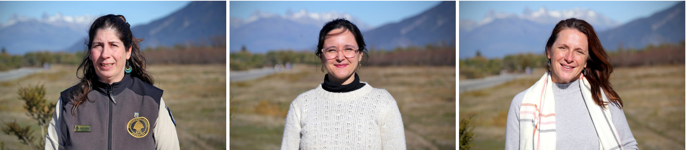
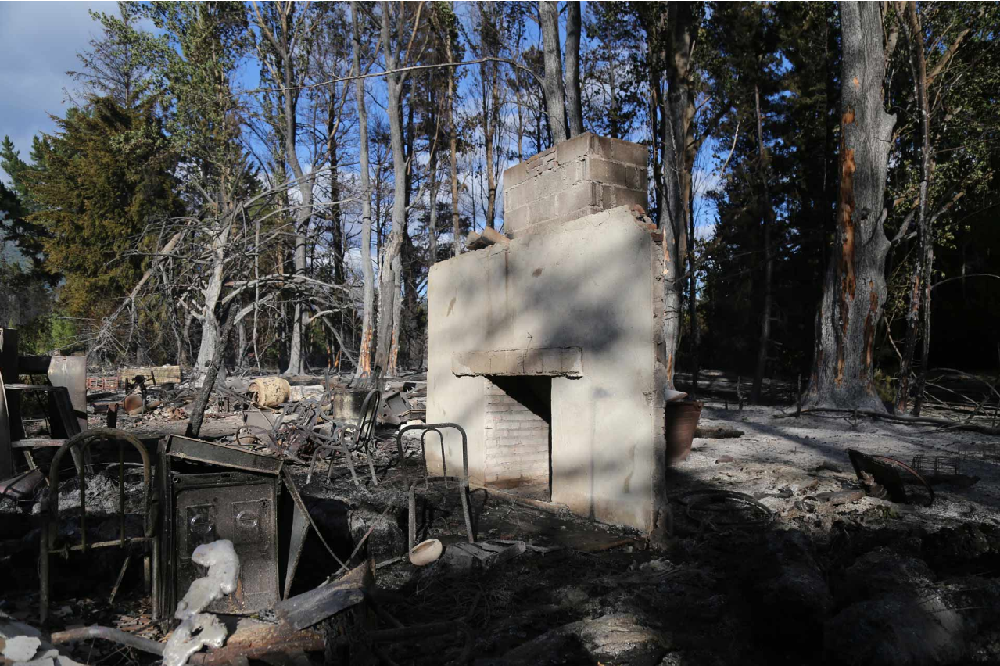
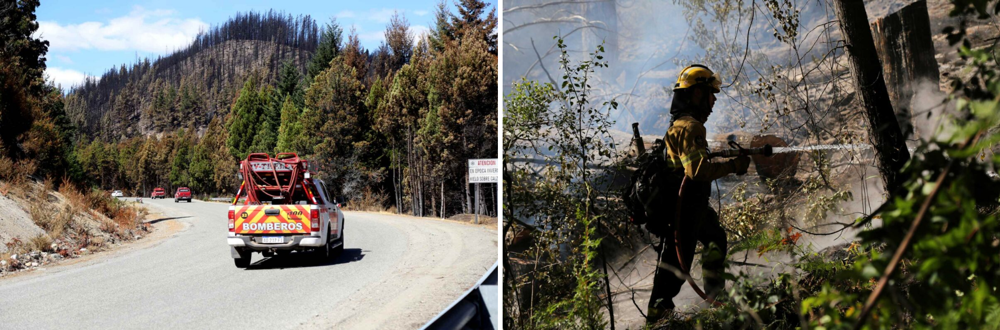
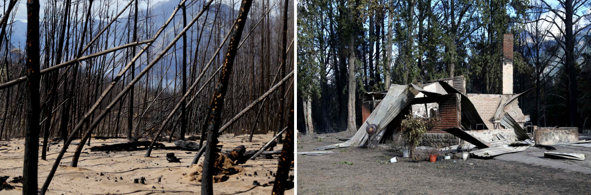
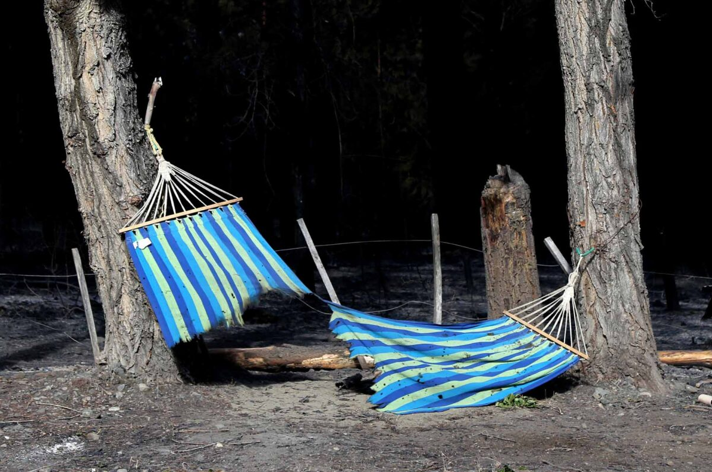
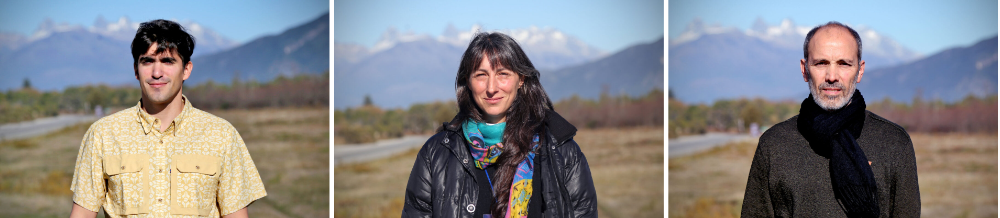

Crónica Interactiva
En Anfibia puedes interactuar con el texto de formas únicas. Prueba estas opciones en cualquier parte del relato:
—La fonoaudióloga de Manu todavía me manda sus dibujos: puro fuego y helicópteros. Durante un año todos los cumpleaños eran vestidos de bomberos.
—Hay gente que perdió todo.
—Y viste ese momento de decir: che qué me llevo.
—Tengo una amiga de Epuyén que vive cerca de la ruta 40. Cuando el fuego subió, la mamá la llama y le dice ‘agarrá la nena, el perro, el título y el televisor’. Sube todo al auto, la nena llora a los gritos mirando el fuego, ella carga el televisor, que era nuevo, y al girar lo choca contra la puerta y lo rompe. La tele era para entretener a su hija.
—Nosotras salimos despacio, en caravanita, con otras madres. Agarré las fotos y los documentos. Los chicos agarraron los playmobil. A mi esposo le rescaté la pelota de rugby y como él también es guardaparques, la motosierra, que la ama. Él se quedó en Lago Puelo. Después, cuando ya no había motosierras todos salieron a agarrar lo propio, y me dice dóóónde estááá, y yo le digo te la salvééé, y me dice ¡pero la necesito acá!
—Nooo…
—Jajaja.
—También agarré comida, sábanas, frazadas y la ropa que iba encontrando, no llevé ni una combinación como la gente. Nos recibieron en Trevelin, éramos siete madres con los chicos. Después se enfermaron todos los pibes juntos.
—A mí una compañera me dice llevate algo de gran valor para vos. ¡Y yo me llevé la máquina de coser! Dije que me encuentre con algo para seguir adelante, voy a volver a empezar.
—Jajajaja.
—En el documental Ecos de fuego, que lo hizo un docente de la Universidad de Río Negro, un brigadista cuenta que lo primero que agarró fueron sus herramientas. En la emergencia la cabeza ya está en la reconstrucción.
En una de las pausas del taller De la información a la acción: comunicar incendios en un nuevo escenario climático en la Patagonia Norte, realizado en el Parque Nacional Lago Puelo, mientras la mayoría de los participantes camina hasta la orilla del Lago, un grupo de mujeres locales se queda charlando. Entre risas y gritos recrean sus fugas hacia la supervivencia familiar, estrategias de adaptación al fuego que en los últimos veranos conmovió al mundo. El duelo ecológico por los bosques del sur —en una temporada se quemó más territorio que en veinte años— fue viral. Lo que ellas hacen, un ejercicio espontáneo de “RCP emocional”, como dirían los equipos que brindan primeros auxilios psicológicos a las personas afectadas por incendios forestales en la Comarca Andina y en Córdoba. Hablar y conectar con redes de apoyo vale, es evacuación emocional.

MINGA
Del encuentro participamos cincuenta personas vinculadas a la ciencia, la comunicación, el territorio y las experiencias comunitarias. Investigadores, periodistas, brigadistas y activistas de la Comarca Andina del Paralelo 42 —la región donde se tocan Río Negro y Chubut—, atravesada por la ruta 40. Es un jueves de fines de mayo. Hace más frío en Buenos Aires que en Lago Puelo, donde el calor y el color de pasto parecen de primavera. Invitan un pool de organizaciones: Avina con iniciativa BASE, AcercAR, Alimentaris e InnContext.
La convocatoria busca recuperar la promesa que se hace la gente de la Comarca durante la emergencia (es decir, los incendios): ¡Tenemos que organizarnos mejor! Pero después del fuego, el impulso de la vida cotidiana se reconstruye desde las ruinas, no queda margen para más reuniones. Quizás, mirar para otro lado le da descanso al desafío colectivo que toca vivir. Pero esta mañana se inventa el tiempo. Desean sentir que esa contención comunitaria que aparece durante la emergencia es real, y que puede fortalecerse más allá de la adrenalina y el estrés.

Más que el taller de una ong, este encuentro parece una asamblea o, mejor, una minga. Se llama De la información a la acción porque la comunicación ocupará un lugar central, entendida más allá de la difusión o lo periodístico: como vínculo y estrategia para reconstruir una agenda común, socializar las recomendaciones de las instituciones, llegar mejor tanto a las comunidades indígenas y rurales como a los medios locales, nacionales y extranjeros. Todo, para no morir. O dicho en sus palabras: “para aprender a vivir de forma responsable con el amor por la vida como filosofía”.
—No somos Grinpís, somos la ballena.
Aquel lema de la Asamblea de Esquel sigue haciendo sentido esta tarde, décadas después del No a la Mina.
El año 2024 fue bisagra: en Sudamérica hubo más de 346 mil focos de fuego, cuentan Marcos H. Easdale, ingeniero agrónomo, y Santiago Hurgado, Licenciado en Meteorología y Ciencias de la Atmósfera, ambos investigadores del área de Análisis de Sistemas complejos de la Fundación Bariloche. Cómo afectaron a la Comarca:
- Entre 1999 y 2022 hubo ocho incendios grandes.
- Entre 2025 y 2026, cuatro incendios grandes arrasaron con 70 mil hectáreas.
- La falta de lluvia y nieve seca los ríos, el suelo; así, las hojas y las ramas se vuelven un peligroso combustible vegetal.
- Los incendios actuales son un 30 por ciento más peligrosos, duran más tiempo y amenazan cada vez a más regiones.
- Ya no se trata de evitar el cambio, sino de reconocer que la normalidad es otra y hay que aprender a vivir con eso.
Entonces, cómo aprovechar estos meses, los meses sin “r”, ese período que para las comunidades indígenas significan “meses de paz”, de volver hacia adentro, de reconocerse paisaje y repensar cómo habitar cuando la naturaleza vuelva a fluir.
Después habló Pablo Baños, Gerente de Comunicaciones para América Latina y África de Avina. Compartió una guía para diseñar relaciones simbióticas entre periodismo y sociedad civil, que dice “Tejer redes es un acto de supervivencia pero también de renovación: cada alianza amplía la vida del relato y la capacidad transformadora del periodismo”. Una idea tomada de la reciprocidad en la naturaleza.
Momento lúdico: todos de pie, recibiendo postales con ilustraciones de lagos, glaciares, selvas, bosques, huemules, ciervos, zorros colorados, picaflores y otras aves, coihues, lengas, alerces, arrayanes, ríos turquesa, valles y mallines (los humedales del sur). Cada participante levanta su tarjetita y hace match para formar el ecosistema local y así, nuevas rondas de trabajo.
—¡Anímense a pensar más allá, a crear la botánica fantástica!
Aprendemos la diferencia entre prevención y preparación: si los incendios ya no se pueden evitar, ¿cómo planificar la respuesta para minimizar los daños? Que un buen cálculo para convivir con la naturaleza es el 3-30-300: ver al menos 3 árboles desde la ventana de tu casa, escuela o trabajo; 30 por ciento de verde en cada barrio y que cada vivienda esté a 300 metros del parque o espacio verde más cercano. Que a la hora de recibir donaciones, lo que se necesita es ropa de trabajo ignífuga y borcegos (aunque la gente, en redes sociales, pida aviones hidrantes). Que una fuente de información segura es el SPLIF (Servicio de Prevención y Lucha contra los Incendios Forestales). Que los brigadistas usan traje amarillo y los bomberos, rojo. Que la prioridad ante la emergencia es salvar, y en este orden: vidas, viviendas, bosque. Que a muchas plantas las llaman “combustible”, según su estructura y grado de inflamabilidad. Que la Comarca es una mezcla de campo y ciudad, que la “interfase” es esa zona entre lo rural y lo urbano, que las “estructuras” son las casas. Que los bomberos apagan las estructuras y los brigadistas, los incendios forestales. Y que aumentó un 15 por ciento la intensidad del viento en febrero: las ráfagas son determinantes en la velocidad de propagación y el comportamiento del fuego.

VIENTO
—Cuando evacuamos, yo miraba por el espejo y pensaba ‘esto ya no lo vuelvo a ver’.
—A mí me encanta la montaña, pero no la revisito ni en pedo.
—A mí me quedó como el fantasma del fuego. Miro y digo ‘allá hay un árbol’. Calculo de dónde va a venir el viento. ‘Y si viene para acá qué me va a pasar y si no podé este árbol va a chocar con esta chapa’.
—Cambió el sonido del viento. Desde la ventana de mi casa el viento se escuchaba como una ola, decías: viene bajando el viento. Ahora que ya no están las copas de los árboles sino puro palo, corre distinto.
—Yo vine a vivir acá a los 10 años. Mi familia es de Río Pico, por eso el viento no me asusta.
—Cuando pasa el evento y volvés, parece que vivís en zona de guerra entre cenizas, humo constante, helicópteros y campamentos del Ejército.

HONGOS
¿Cómo se desata un incendio forestal? Se suele acusar a los pinos abandonados. A terroristas mapuche. A supuestos refugiados israelíes quieren quedarse con el agua. Hasta a “los hongueros chilenos” que recolectan morillas —hongos gourmet carísimos—, que son nativos de la Patagonia y crecen exponencialmente cuando se incendia un bosque.
Pero los humanos no somos los únicos agentes del planeta. La performatividad de la naturaleza también hace lo suyo. Así como ahora nieva en Nueva Orleans, hay huracanes tropicales en el Mediterráneo y los londinenses se mueren de calor, en la Comarca empezaron a caer rayos. La escucha profunda del sonido del rayo irrumpe como otra forma de conocimiento, que avisa a través del cuerpo y desata una telepatía comunitaria.
El conocimiento que la ciencia construye desde hace más de 50 años se vuelve concreto. Tanto que en la última COP, realizada en la Amazonía brasileña, la protección de los bosques nativos, la lucha contra el fuego y la deforestación ocuparon el centro de la agenda para 2030. En tiempos de negacionismo climático, visibilizar con evidencia el vínculo que existe entre estos incendios, entendidos como eventos extremos, obliga a diseñar nuevas estrategias de prevención, respuesta a la emergencia y recuperación de los paisajes afectados.

¿Qué toca? Aprender a convivir con el fuego. Aceptar que se habita en un lugar con riesgo alto de padecer incendios forestales incontrolables. Que “se trata de una ruptura y no de una crisis” y hay que “diseñar alianzas con las tensiones, no contra las tensiones”, dicen los científicos de la Fundación Patagonia.
Difícil atravesar el invierno como “los meses de paz”. La población local está sensible e hiperalerta. La percepción del riesgo comunitario activa estrategias para la acción. Por ejemplo, alientan que la prohibición del uso del fuego —incluso para hacer un asado en los parques nacionales— se extienda durante todo el año. Saben que una chispa de la amoladora puede incendiar una ladera, o que salir a tirar las brasas de la cocina, como se hizo toda la vida, puede terminar en un llamado a los bomberos. La sirena cruzando la Comarca, otra forma de conocimiento y telepatía. Igual que las notificaciones del grupo de Whatsapp comunitario con más de 700 vecinos.
ABRAZAR UN ÁRBOL
“Vivir en zona de interfase no sólo presenta riesgos, también tiene beneficios. Ayuda a mantener contacto con la naturaleza y sus ritmos, genera microclimas benignos, promueve la salud social al interactuar con vecinos, puede inspirarnos y posiblemente también favorezca la reducción de la contaminación atmosférica y el ruido”, dice el libro Redescubriendo nuestro entorno, de Aldana Matellini y Nicolás Bondel.

Cada vez más personas (de afuera) quieren vivir en el bosque “abrazados a una lenga”, exageran los locales. Después de un incendio forestal, las fotos de las revistas de arquitectura y decoración se miran de otra manera. “¿Cómo puede haber premios nacionales de paisajismo que celebran la construcción de casas pegadas a las ramas de los árboles? ¿Cómo se deconstruye ese conservacionismo?”, comentan. Como en todas las regiones del mundo afectadas por los eventos climáticos extremos, queda por delante la compleja tarea de la configuración territorial.
La emergencia también genera omnipotencia. Cuando el incendio no es en la zona de interfase sino en un parque (lejos de las vidas humanas y de las viviendas), igual muchos vecinos corren a apagar el fuego poniéndose en riesgo y sin herramientas para afrontar física, técnica y emocionalmente la escala del evento.
PERROS Y HUEMULES
—A los perros los dejamos en mi casa, tengo un cerco. La orden fue que a último momento, si todo explotaba, los soltaran. Pensábamos que iban a huir hacia el lago. Cuando fue una compañera y los soltó, todos corrieron y se le subieron al auto.
—Jajajaja.
—Sí, pensábamos que la villa explotaba. El fuego venía y no se podía hacer nada. Era una cosa bíblica.
—El momento más terrible fue la escuela. Se salvó porque fueron todos a mojarla. Dicen que en ese momento no ves nada, ni tus pies. Esa escuelita está en el medio de la cordillera, es muy linda, producen plantas nativas.
—¿Les dará tiempo a los pájaros?
—Mi marido trabaja en el Parque Los Alerces, es biólogo. Monitorea la población de huemules. Y se pasó un año diciendo: los huemules van a volver, su conducta es volver al lugar. Y ahora están volviendo. Sólo le falta que aparezcan tres.
NATIVAS
En los “meses de paz”, las comunidades indígenas trabajan en la restauración del suelo, podan las plantas para dejar que la vida propia de las raíces hagan lo suyo. En tiempos de adaptación, queda combinar lo mejor de lo ancestral y de lo nuevo.
Entre las maneras contemporáneas de habitar el bosque sin amenazar el paisaje, una de las recomendaciones es generar las “zonas defendibles”. Como el inicio y la propagación del fuego depende muchísimos de la estructura e inflamabilidad de la vegetación, una alternativa es elegir especies nativas de arbustos, árboles y enredaderas, ubicarlas a cierta distancia entre sí y cuidarlas de manera especial. Ciprés, maitén, notro, retamo, chacay, laura, maqui, zarzaparrilla, parrillita, enredadera clavel de campo, entre otras especies, cuidan el bosque: porque están adaptadas al clima de la Comarca, y no sólo tienen bajo nivel de inflamabilidad sino que necesitan menos agua. El recursero de la bióloga Melisa Blackhall, investigadora del CONICET, también recomienda mantener el pasto cortado y tirar las ramitas secas. Y sí: la transición requiere un presupuesto verde tan enorme como excluyente.
CORTISOL DE VERANO
—Estos últimos años los veranos están siendo el cortisol. Agarrémonos que se viene.
Fernanda Rezzano hace un chiste y lo dice en serio. Ella está al frente de la asociación civil AcercAR. Mientras los tecnofeudales planean mudarse a Marte, Fernanda reunió a ex compañeros de secundario y amigos de amigos, nacidos y criados en la Patagonia, que se fueron a estudiar a otras regiones y eligieron volver. Y quedarse en este lugar que cambia de color en cada estación, está lleno de lagos que reflejan bosques, golondrinas que anidan en el techo de las casas en primavera, el cinchin y su perfume entre vainilla y chocolate, el area natural protegida que es uno de los grandes pulmones de bosque nativo, y una comunidad híbrida, de aquí y de allá, pero que sienten el mismo deseo por el lugar. Trabajan por un desarrollo local sustentable. Fernanda es comunicadora, Paula es diseñadora, Pamela es docente, Tatiana es periodista, Guido matemático, Victoria es médica, Maximiliano es politólogo, Juanjo es contador, Eimí es desarrollóloga, Nehuén es geógrafo, Nicolás es Forestal, Martina es Ambientóloga, Marta es abogada, Guadalupe es obstetra.

Vistos desde los Objetivos de Desarrollo Sostenible para la agenda 2030, se apropian de los casilleros “resiliencia” y “medidas urgentes para combatir el cambio climático”, en parentesco con acciones de tantas otras regiones en las que confluyen saberes científicos, técnicos, comunitarios y ancestrales. Esto, sin caer en la epistemología de la desregulación: el Estado es responsable, se tiene que encargar. La adaptación necesita financiamiento, sobre todo en las regiones y poblaciones más vulnerables. La Constitución, la Ley General de Ambiente y tantos otros marcos enuncian la responsabilidad oficial de cuidar los territorios.
Fernanda da clases de educación ambiental. Recorre escuelas. Cuando los chicos dicen ‘no quiero que llegue el verano’, les responde que no tengan miedo, que en los paisajes pasan cosas, que transformamos el entorno pero que eso no necesariamente significa el final. Que un bosque quemado también puede ser el principio de otro paisaje si lo acompañamos.
Lectura Activa & Comentarios
Sumar mi comentario
También puedes resaltar fragmentos del texto de la crónica directamente con tu cursor para comentarlos o guardarlos.